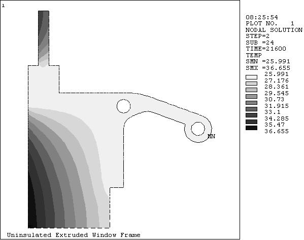
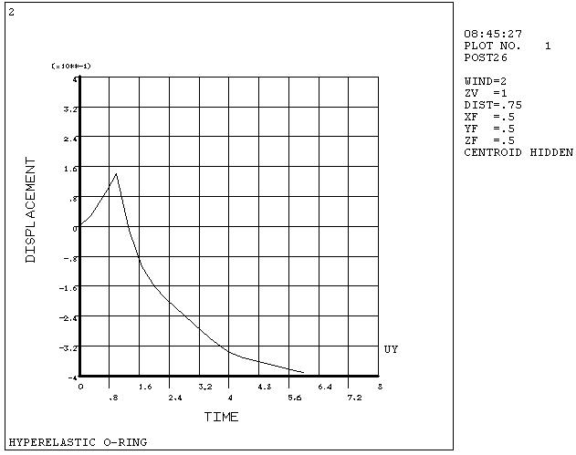

2.4 Overview of Postprocessing
After building the model and obtaining the solution, the analyst wants answers to some critical questions: Will the design really work when put to use? How high are the stresses in this region? How does the temperature of this part vary with time? What is the heat loss across this face of my model? How does the magnetic flux flow through this device? How does the placement of this object affect fluid flow? The postprocessors in the ANSYS program can help answer these questions and others.
Postprocessing means reviewing the results of an analysis. It is probably the most important step in the analysis, because the analyst is trying to understand how the applied loads affect the design, how good the finite element mesh is, and so on.
2.4.1 Postprocessors Available
Two postprocessors are available for reviewing the results: POST1, the general postprocessor, and POST26, the time-history postprocessor. POST1 allows the analyst to review the results over the entire model at specific load steps and substeps. In a static structural analysis, for example, s/he can display the stress distribution for load step 3. Or, in a transient thermal analysis, s/he can display the temperature distribution at time = 100 seconds. Figure 2.14 is a typical example of a POST1 plot.
POST26 allows the analyst to review the variation of a particular result item at specific points in the model with respect to time, frequency, or some other result item. In a transient magnetic analysis, for instance, the analyst can graph the eddy current in a particular element versus time. Or, in a nonlinear structural analysis, s/he can graph the force at a particular node versus its deflection. A Typical POST26 Graph is shown in Fig. 2.15.

Fig. 2.14 A Typical POST1 Contour Display

Fig. 2.15 A Typical POST26 Graph
It is important to remember that the postprocessors in ANSYS are just tools for reviewing analysis results. The analyst still needs to use engineering judgment to interpret the results. For example, a contour display may show that the highest stress in the model is 37,800 psi. It is now up to her/him to determine whether this level of stress is acceptable for the design.
2.4.2 The Results Files
The analyst can use OUTRES to direct the ANSYS solver to append selected results of an analysis to the results file at specified intervals during solution. The name of the results file depends on the analysis discipline:
- Jobname.RST for a structural analysis and coupled-field analysis
- Jobname.RTH for a thermal and diffusion analyses
- Jobname.RMG for a magnetic field analysis
For fluid analyses, the file extension is .RST or .RTH, depending on whether structural degrees of freedom are present.
2.4.3 Types of Data Available for Postprocessing
The solution phase calculates two types of results data - Primary data and Derived data. Primary data consist of the degree-of-freedom solution calculated at each node: displacements in a structural analysis, temperatures in a thermal analysis, magnetic potentials in a magnetic analysis, and so on. These are also known as nodal solution data.
Derived data are those results calculated from the primary data, such as stresses and strains in a structural analysis, thermal gradients and fluxes in a thermal analysis, magnetic fluxes in a magnetic analysis, and the like. They are typically calculated for each element and may be reported at any of the following locations: at all nodes of each element, at all integration points of each element, or at the centroid of each element. Derived data are also known as element solution data, except when they are averaged at the nodes. In such cases, they become nodal solution data.